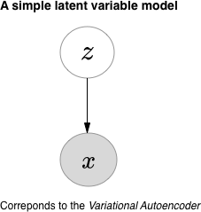
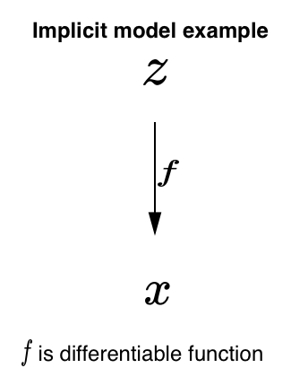
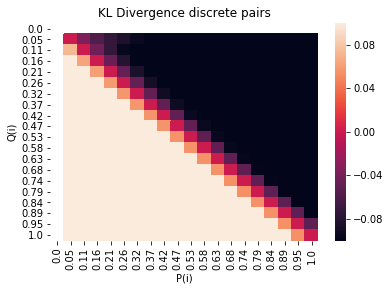

Organizing the landscape of deep generative models
Motivation
Over the past few years a plethora of generative models have been introduced
and it can be difficult to see how they all compare and contrast.
The objective of this post is to review the underlying characteristics of a
generative modeling procedure instead of any specific model itself.
Any specific approach can then be
seen as the consequence of a series of decisions
that lead to these characteristics.
From this vantage point we can tailor our generative modeling approach to the
problem at hand and wisely choose where we wish to explore
next.
Introduction
Generative modeling is the task of learning a model from data that we
can sample new points from. This often translates into learning a
probability distribution that is close to some real data distribution
from which we have access to samples. In recent years deep neural networks
have been leveraged to amortize inference across observed data
in latent variable models, sample new points via flexible implicit
models and more.
Phrasing the task more formally as done in
Bottou et al :
View the data as a sample from an underlying probability distribution
$\mathcal{Q}$ defined over a Polish space $\mathcal{X}$
(Complete and separable whose topology comes from a distance function).
Denote by $\mathcal{P}_{\mathcal{X}}$ the space of probability measures
$\mu$ defined on $(\mathcal{X},\mathcal{U})$,
$\mathcal{U}$: Borel $\sigma$-algebra generated by open sets of $\mathcal{X}$.
Consider a way to compare elements of $$\mathcal{P}_{\mathcal{X}}: (P,Q)
\rightarrow D(P,Q) \in 0, \infty)$$
The goal, given a family of distributions $\mathcal{P}_\theta \in P_X$,
is to find $$\min_{\theta}L(\theta)=D(Q, P_{\theta})$$
Organizing the landscape of deep generative models is
a daunting task but we can start by stating some high level
delineating attributes.
-
The modeling choices
How the parameterized family of distributions $P_{\theta}$ and any other
auxiliary models are represented.
-
The principle of learning
How to bring the distribution defined by our generative model closer
to the true data generating distribution:
$\min_{\theta}L(\theta)=D(Q, P_{\theta})$ Often very closely
tied with the modeling choice.
-
The underlying distance/divergence being minimized
What measure $D(Q, P_{\theta})$ is being minimized. Often the consequence
of other decisions.
Many popular deep generative models in use today can be indexed by how they express
these attributes. One thing to note, however, is that the categories are very intertwined.
A modeling choice might also fix the techniques that are available for learnning, or vice versa.
There are also many other factors that can be used to compare different deep generative modeling
approaches to each other. Despite these shortcomings, It's a reasonable way to try and start
organizing the landscape of deep generative models.
In this review we will take a look at each of these categories in turn
and give examples of different approaches within them.
We will pay special attention to (3) and discuss how different choices of divergence/distance
impact modeling and how different measures relate to each other.
We will also discuss downstream applications of deep generative modeling,
and what the desiderata for choice of divergence are for each.
Model choices
There are many different ways to model the family of distributions
$P_{\theta}$ and any auxiliary models in the context of deep generative modeling.
Two general categories are latent variable models and implicit models.
Since the variations and extensions to these categories are vast, we will just
provide an overview.
Latent variable models
Latent variable models tie observations $x \in \mathbb{R^{d_{x}}}$ with unobserved variables
$z \in \mathbb{R^{d_{z}}}$ with model parameters $\theta \in \mathbb{R^{d_{\theta}}}$
They specify a story for how a sample is generated with respect to the latent structure.
The hope is that we can then learn the hidden structure we've posited from
observed data. In general we are interested in probabilistic queries that
give distributions for unobserved quantities like parameters or latent variables
by conditioning on observed quantities like real data.

Implicit models
In many situations we have an easy way to sample data but no explicit
likelihood function. These types of models are usually referred to as
implicit.
The kinds of implicit models we are going to focus on transform
noise into a sample using a differentiable, parameterized map.
We can define our mechanism to sample from $\mathbb{P_{g}}$
$z \sim p(z)$ and a function $g: \mathcal{Z} \to \mathcal{X}$
where g has some parameters $\theta$.

Principle of learning
It should be of no surprise that the principle of learning is a key property of a generative modelling procedure
It should be equally unsurprising that this area is incredibly rich and vast.
We will provide two broad trends that are popular in the context of deep
generative modeling and relate to the modeling approaches we talked about
in the previous section. Many alternative approaches as well as extensions and
combinations of the following categories exist in the literature.
We will follow the exposition found in Mohamed et al
There are many different specific mechanisms for
learning in generative models and they are often closely related to the modeling choices made.
We will talk about two popular varieties:
one thats associated more with latent variable models
and another that is more often associated with implicit models that have no explicit
likelihood function.
For latent variable models, a principle of learning commonly employed is maximum likelihood
estimation via variational inference.
Maximum likelihood and variational inference
Since variational inference is commonly employed when using a latent variable model,
its useful to discuss it in this context.
So to recall our setup of a latent variable model: we have
$$ x \in \mathbb{R^{d_{x}}}$$ $$z \in \mathbb{R^{d_z}}$$ $$\theta \in \mathbb{R^{d_{\theta}}}$$
We also have access to a dataset $\mathbb{D}$ Composed of $N$ elements.
The likelihood of any single example under the model is then
the probability we see an example given the value of its associated latent
variables z, times the probability we see that value for z, summed up
over all possible values for z:
$$\log p_{\theta}(x)= \log \int p_{\theta}(x|z)p(z)dz$$
Turning the integral into an equivalent expectation that we can estimate via
Monte Carlo:
$$\log \mathbb{E_{p(z)}}[p_{\theta}(x|z)]$$
How likely is our whole dataset then? Its the sum of the likelihoods for any individual
$x_i$:
$$\log p_{\theta}(\mathbb{D}) = \sum_{i=1}^N \log \mathbb{E}_{p(z)}[p_{\theta}(x_i|z)]$$
That seems straightforward enough, why not simply try and optimize that directly?
The problem is that the $z$ is usually high dimensional in this setting,
and $p_{\theta}(x_i|z)$ may be represented by a complex function like a neural network.
In fact, whenever theres a conditional distribution, its liable to get approximated
by a deep neural network in this context. It turns out that in practice this
is very hard to deal with computationally.
Our solution will be to introduce an approximate family of densities $q$ that
we know is much easier to deal with computationally, and then try
and approximate our true posterior using this variational family.
We do some manipulation to see what our new expectation with respect to
$q(z)$ looks like. The hope is that this is much easier to work with than the
true posterior $p(z|x)$. Since we are in control
of how $q$ is represented, we are also in control of how simplified we want to make
the approximation.
$$\log_{p_{\theta}}(D) = \sum_{i=1}^N \log \mathbb{E_{p(z)}}[p_{\theta}(x_i|z)]$$
$$\log \mathbb{E_{p(z)}}[p_{\theta}(x_i|z)]=\log \mathbb{E}_{q_i(z)}[\frac{p_{\theta}(x_i|z)p(z)}{q_i(z)}]$$
By Jensen's inequality:
$$\log \mathbb{E_{q_{i}(z)}}[\frac{p_{\theta}(x_i|z)p(z)}{q_i(z)}] \geq \mathbb{E_{q_i}(z)}[\log\frac{p_{\theta}(x_i|z)p(z)}{q_i(z)}]$$
$$\log_{p_{\theta}}(\mathcal{D})\geq \sum_{i}^N \mathbb{E}_{q_i(z)}[\log \frac{p_{\theta}(x_i|z)p(z)}{q_i(z)}]$$
We can write:
$$\mathbb{E}_{q_i(z)}[\log \frac{p_{\theta}(x_i|z)p(z)}{q_i(z)}] = \mathbb{E}_{q_i(z)}[\log p_{\theta}(x_i |z)] - KLD(q_i||p)$$
Which is often referred to as the evidence lower bound or ELBO and consists of a reconstruction term $$\mathbb{E_{q_i}(z)}[log_{p_{\theta}}(x_i|z)]$$
and a regularizer which controls how far $q_i$ strays from the prior $$KLD(q_i||p)$$
We made a tradeoff, as is often the case:
an easier expectation to work with, in exchange for another thing to optimize.
One natural way to do this is to alternate between finding a good
setting for $q$ and good model parameters, this is known as
the variational EM algorithm. Since the way $q$ is actually represented
depends on various factors, we will just refer to the
optimal q at any time-step for any data point as $q_{i}^*$.
In the expectation step:
$$q_i^{*}(z) = \text{argmax}_{q_i}E_{q^{*}_{i}(z)}[\log \frac{p_{\theta}(x_i|z)p(z)}{q_{i}^{*}(z)}]$$
In the maximization step:
$$\theta^{*} = \text{argmax}_{\theta}\sum_{i=1}^N \mathbb{E}_{q_i^* (z)}[\log\frac{p_{\theta}(x_i|z)p(z)}{q_{i}^{*}(z)}]$$
All this is doing is alternating finding a good setting for the approximating distribution $q$ and
the model parameters $\theta$
We could instead introduce a parametric family of densities:
$$ q_i^*(z) = \text{argmax}_{q_i}\mathbb{E_{q_i^*(z)}}[-\mathcal{F}(x_i, z)]$$
$$\text{argmax}_{\phi} \mathbb{E_{q_{\phi}(z|x)}}[-F_{\phi}(x_i, z)]$$
The popular generative model known as the Variational Autoencoder (VAE) does exactly this
The VAE uses the gaussian variational family $q_{\phi}$ indexed by a mean $\mu$ and a covariance $\Sigma$.
The latent variable $z_i$ associated to a data point $x_i$ is then sampled from $\mathcal{N}(\mu_i, \Sigma_i)$
The conditional distributions $p(x_i| z_i)$ is modeled by a neural network and
so is the conditional distribution $p(z_i|x_i)$ which maps data points to variational
parameters ($\eta$) $\mu_i, \sigma_i$. The loss is then $\mathbb{E}_{q_i(z)}[\log_{p_{\theta}}(x_i|z)]-KLD(q_i||p)$
Summary:
Prior on z: $$z \sim \mathcal{N}(0, \mathbb{I})$$
Sufficient statistics $$\eta = f_{\theta}(z)$$
The data conditional likelihood $$x \sim \mathcal{N}(\eta)$$
The data sample: $$x \sim \mathcal{D}$$
The latent sufficient statistics $$\eta=f_{\phi}(x)$$
Posterior sample $$z=\mathcal{N}(\eta)$$
There are many things that we glossed over, primarily how the family of distributions
q will actually be represented, how its parameterized, and how we actually do the optimization
required. While these are all fascinating topics, they are a bit out of the scope of this post.
For our other big class of models, we have another popular principle of learning.
For implicit models with no explicit likelihood the principle
of learning often employed is learning by comparison.
Learning by comparison
For the following section lets take to the data generating distribution as $p^*$,
our approximating distribution as $q$ and our samples from $p^*$ as $D$.
Often we don't have access to the likelihood function $P(D|\theta)$ but
can easily sample from our model $q_{\phi}$
and have access to samples from the data generating distribution $p^{*}$.
We are also primarily interested in cases where our sampler takes the
form of a differentiable map from random vectors to samples:
$f_{\phi}(z) \to X$. The function $f$ can be thought of as a deep neural network
in this context.
In this scenario our only real path to learning is to compare real samples
from $p^*$ to samples from our approximating model, theres not much else that can be done.
We can compare the difference ($q - p^*$) or the ratio $\frac{q}{p^*}$.
Lets focus on the ratio for now since it corresponds to the formulation
popularized by Generative Adversarial Networks .
One way to do this is by using the ratio
$r_{\phi} = \frac{q}{p^*}$ such that when $r_{\phi}$ is 1 the distributions are
identical. We can try and develop a learning procedure that attempts to
improve $r_{\phi}$ by alternating between Comparison and
Estimation steps.
In the Comparison step we build an auxiliary model to evaluate
differences between observed data and generated data.
In the estimation step we adjust model
parameters accordingly. The general framework for this type of learning is as follows:
First combine the real data and simulated data to form
$\{\boldsymbol{x_1}..\boldsymbol{x_N}\}$.
Next assign the real and fake samples binary labels (+1, -1) respectively, denoting their
class membership.
Observe that $$p^*(\boldsymbol{x})=p(\boldsymbol{x}|y=1)$$ and
$$q(\boldsymbol{x}) = p(\boldsymbol{x}|y=-1)$$ We can now write the ratio
as $$\frac{p^*(\boldsymbol{x})}{q(\boldsymbol{x})} =
\frac{p(\boldsymbol{x}|y=1)}{p(\boldsymbol{x}|y=-1)}$$
Using Bayes theorem to invert the conditional probabilities gives:
$$\frac{p(y=+1|\boldsymbol{x})p(x)}{p(y=+1)} / \frac{p(y=-1|\boldsymbol{x})p(x)}{p(y=-1)}$$
This allows us to equate $r_{\phi}$ with the class probability ratio
$$\frac{p(y=1|x)}{p(y=-1|x)}$$
Next assume a scoring function $$D_{\theta}(\boldsymbol{x}) = p(y=+1|\boldsymbol{x})$$
Since we have binary labels it makes sense to use a Bernoulli loss:
$$\mathcal{F}(\boldsymbol{x}, \theta, \phi) = E_{p^*(x)}[\log D_{\theta}(\boldsymbol{x})]
+ E_{q_{\phi}}(x)[\log (1-D_{\theta}(\boldsymbol{x}))]]$$
Our optimization can now be
$$min_{\phi}max_{\theta}\mathcal{F}(\boldsymbol{x}, \theta, \phi)$$
This gives the two alternating steps with respect to each set of parameters:
-
Update $\theta$: $\nabla_{\theta} E_{p^*}(x)[\log D_{\theta}(\boldsymbol{x})]
+ \nabla_{\theta} E_{q_{\phi}}(x)[\log(1-D_{\theta}(\boldsymbol{x}))]$
-
Update $\phi$: $-\nabla_{\phi}E_{q(z)}
[\log D_{\theta}(f_{\phi}(\boldsymbol{z}))]$
This style of learning corresponds corresponds to the approach popularized by
generative adversarial networks. .
Throughout this post we may refer to GAN style training and earning by comparison alternatively.
We can also vary $f_{\phi}$ to get different generative models. This
choice of $f_{\phi}$ is closely related to which $D$ is minimized. Its also related to a
class of divergences called integral probability metrics
$$M_f(p,q)= sup_{f\in \mathcal{F}}|\mathbb{E}_{p(x)}[f]- E_{q_{\theta}(x)}[f]|$$.
Where the $f$ in question is sometimes referred to as the critic, test function or witness.
Mohamed et al
Choice of $D$
One of the most important modeling properties is the underlying divergence
or distance between $P_R$ and $P_G$ thats being minimized.
Often times this attribute is simply the consequence of other decisions.
For instance maximum likelihood learning is asymptotically equivalent
to minimizing $KL(P_r, P_{\theta})$ when both distributions admit densities and are
absolutely continuous with respect to some measure $\mu$
An interesting question is whether it makes sense to begin by thinking of which underlying $D$ should be
minimized, and then making all other decisions based on that.
To begin to think about this question lets review some of the different
families of divergences and outline some models that relate to each
family.
To qualify as a true distance, a measure $\textit{d}$ must fulfill:
- $d(x, x)=0$
- $x \neq y \implies d(x,y)>0$
- $d(x,y) = d(y,x)$
- $d(x, y) \leq d(x, z) + d(z, y)$
When a choice $d$ fails to fulfill (3) or (4), we will call it a divergence.
To encompass both divergences and distances we will refer to $D$ from our
original definition of generative modeling.
There are many families of $D$ and many other modeling procedures
that employ them. Going through som well studied families of $D$ and showing some selected
examples of modeling approaches will hopefully show how many cases in
the literature compare and contrast.
F-divergences
A well studied class of divergences are the $F-divergences$.
Let $P$ and $Q$ be two probability distributions over a space
$\Omega$ such that $P$ is absolutely continuous with respect to $Q$.
Then, for a convex function $f$ such that $f(1)=0$ the
f-divergence of $P$ from $Q$ is defined as:
$$D_f(P ||s Q) = \int_{\Omega} f(\frac{dP}{dQ})dQ$$
Different choices of $f$ give us different F-divergences:
| Name |
$\mathbf{\mathcal{f}(t)}$ |
| KL-divergence |
$t \log t$ |
| Reverse KL-divergence |
$-\log t$ |
| Alpha divergence |
$
\begin{cases}
\alpha \neq \pm 1 & \frac{4}{1-\alpha^2}(1-t^{\frac{(1+ \alpha)}{2}}) \\
\alpha = 1 & t \ln t \\
\alpha = -1 & -\ln t
\end{cases}
$
|
| Squared Hellinger |
$(\sqrt{t} -1)^2$ |
| Jensen Shannon |
$-(t+1)\log \frac{1+u}{2} +u \log u$ |
| Pearson $\mathcal{X}^2$ |
$(u-1)^2$ |
| Total variation |
$\frac{1}{2} |t-1|$ |
The most famous F-divergence is the Kl divergence which shows up all
throughout machine learning and statistics
$$KL(\mathbb{P_r}, \mathbb{P_g}) = \int \log(\frac{p_r(x)}{p_g(x)})p_r(x) d\mu(x) $$
where both distributions $\mathbb{P_r}, \mathbb{P_g}$ are absolutely continuous
and admit densities $p_r, p_q$ with respect to some measure $\mu$ defined on
$\mathcal{X}$.
In the case of generative modeling it often comes up because the maximum likelihood estimation problem
$\max_{\theta \in \mathbb{R}\sum_{i}^{m} \log P_{\theta}(x_i)}$
is equivalent to $KL(P_{r}, P_{\theta})$ when the parameterized density $P_{\theta}$ corresponds to the
distribution $\mathbb{P_{\theta}}$ and $P_{r}$ is the density of $\mathbb{P_r}$.
If the model density $P_\theta$ doesn't actually exist then it doesn't make sense to
do maximum likelihood learning. Furthermore, if the data distribution $P_r$ doesn't actually
admit a density, it doesn't make sense to do density estimation at all.
To get some intuition for the KL divergence, consider this plot of
values of $\log(\frac{P_{r}(x)}{P_g}(x))$ evaluated on a discrete grid.

F-gan
The authors of develop a general framework
for doing learning by comparison using generic F-divergences.
Recall that an F divergences for two distributions $P$ and $Q$ with
absolutely continuous densities $p$ and $q$ with respect to some measure $dx$ on a
domain $\mathcal{X}$ is $$D_f(P || Q)\int_{\mathcal{X}}q(x)f(\frac{p(x)}{q(x)})dx$$
where $f:\mathbb{R_{+}}\to \mathbb{R}$ is a convex, lower semicontinuous function satisfying f(1)=0.
Nguyen et al developed a method to estimate
any F-divergence with samples from P and Q. The authors
further extend this so that you don't have to fix the model before hand.
To get his estimation procedure, Nguyen Nguyen et al
leverage the Fenchel conjugate of $f$ ,
$f^*(t)=\sup_{u \in dom_f}\{ut -f(u)\}$
They then show that they can get a
lower bound using the conjugate:
$$D_f(P||Q) \geq \sup_{T \in \mathcal{T}}(E_{x \sim P} [T(x)] - E_{x \sim Q}[f^*(T(x))])$$
here $\mathcal{T}$ is any arbritrary function class $T: \mathcal{X} \to \mathbb{R}$
This bound is tight when $T^*(x) = f'(\frac{p(x)}{q(x)})$
Now Nowozin et al try andj
move from the fixed model case to the task of estimating
the parameters for a generative model $Q$ given
some true distribution $P$
Say we parameterize Q with $\theta$: $Q_{\theta}$ which takes a random
vector and returns a sample. Now take a function $T_{\omega}$
that maps a sample to a scalar
The authors show that you can then do estimation by finding the saddle point
of $$F(\theta, \omega)=E_{x \sim P }[T_{\omega}(x)] - E_{x \sim Q_{\theta}}[f^*(T_{\omega}(x))]$$
The final piece of this procedure is respecting the domain of $f*$, which is done
by limiting the range of $T_{\omega}$ by using
$T_{\omega}(x)=g_{f}(V_{\omega}(x))$ where $g_f: \mathbb{R} \to dom_{f^*}$
is an activationn function and $V_{\omega}$ is any function that maps
$\mathcal{X} \to \mathbb{R}$ .
Now they can give a different $g$ for every F-divergence
to make sure $dom_{f^*}$ is respected.
Plugging in $V_{\omega}$ gives the new objective $F(\theta, \omega)=
E_{x\sim P} [g_{f}(V_{\omega}(x)) + E_{x\sim Q_{\theta}}[-f^*(g_f(V_{\omega}(x)))]$
The authors then give values for $g_f$ and $f^*$ for all the f-divergences
Integral Probability Metrics
As we alluded to in an earlier section, another well studied family of
divergences/distances are the Integral Probability metrics. Since they have the
natural connection to learning by comparison, as we showed before, they have
frequently been used exacltly in that context.
Given a real valued, bounded and measurable set of functions
$\mathcal{F}$ on $M$:
$$
\gamma_{\mathcal{F}}(P, Q) =
\sup_{f \in \mathcal{F}}|\int_{M} f dP - \int_M f dQ|
$$
Different choices for the function class $\mathcal{F}$ give us different IPMs
as shown in Sriperumbudur et al
Given a metric space $(M, \rho)$ with $\mathcal{A}$ being a Borel
sigma algebra induced by metric topology. let $\mathcal{P}$ be the set
of all Borel probability measures on $\mathcal{A}$
| Name |
Choice of $\mathcal{F}$ |
| Dudley metric |
$\mathcal{F} = \{f : ||f||_{BL} \leq 1\}$
Where:
$||f||_{BL} := ||f||_{\infty} + ||f||_L$
$||f||_{\infty}:= \sup\{|f(x)| : x \in M\}$
$||f||_L:=\sup\{|f(x) -f(y)|\rho(x,y) :x \neq y \in M\}$
|
| Maximum mean discrepancy |
$\mathcal{F} = \{f: ||f||_{\mathcal{H}} \leq 1 \}$
$H$ is a reproducing kernel Hilbert space with $k$ as its reproducing kernel.
|
| Kantorovich metric |
$\mathcal{F}=\{f: ||f||_L \leq 1 \}$ |
| Total variation distance |
$\mathcal{F} =\{f: ||f||_\infty \leq 1\}$ |
| Kolmogorov distance |
$\mathcal{F}=\{\mathcal{1}_{(\infty, t]}, t \in \mathbb{R}^d\}$ |
The Kantorovich metric has an interesting dual form
that is gaining increasing visibility within machine learning called the Wasserstein distance.
$W(\mathbb{P}, \mathbb{Q})$
The Wasserstein-1 distance is defined as $W(\mathbb{P_r}, \mathbb{P_g})=
\inf_{\eta \in \prod(\mathbb{P_r}, \mathbb{P_g})} \mathbb{E}_{x,y} \sim \eta[|| x-y||]$
Wasserstein GAN
In Arjovsky et al
the authors develop a method for deep generative modeling through comparison style learning
using the Wasserstein distance. They start by proving that it makes sense
to use the Wasserstein distance in the context of neural networks and gradient
descent.
Take a distribution $\mathbb{P_r}$ over some $\mathcal{X}$.
Let $Z$ be a random variable over $\mathcal{Z}$, let $g: \mathcal{Z} \text{ X } \mathbb{R^d} \to \mathcal{X}$
be a function parameterized by $\theta$ ($g_{\theta}$). Finally lets call the distribution of $g_{\theta}(Z)$
$\mathbb{P}_{\theta}$ Arjovsky et al show that $W(\mathbb{P}_r, \mathbb{P}_{\theta})$
is continuous in $\theta$ if $g$ is, and that if $g$ is locally Lipshitz then $W(\mathbb{P_r}, \mathbb{P_{\theta}})$ is too. Finally if
$g_{\theta}$ is a neural network and theres a prior over $p(z)$ such that $\mathbb{E}_{z \sim p(z)}[|z|]< \infty$ then all
the above are still true
Thats all great and we can now use the comparison based learning approach to optimize the Wasserstein loss except for the fact that
the infimum is not computationally tractable. Luckily the Wasserstein distance can be re-written as
$$ W(\mathbb{P_r}, \mathbb{P_{\theta}})=\sup_{|f|_{L \leq 1}} \mathbb{E}_{x \sim \mathbb{P_r}}[f(x)]-\mathbb{E}_{x \sim \mathbb{\theta}}[f(x)]$$
where we take a Supremum
over 1-Lipschitz functions
If we think about K Lipschitz functions $||f|_{L}|\leq K$ then the authors of
suggest that you could solve $$max_{w \in W}\mathbb{E}_{x \sim \mathbb{P}_r[f_{w}(x)]- \mathbb{E}_{z \sim p(z)}[f_w(g_{\theta}(z))]}$$
The authors prove that if you can find some $w \in W$ for which the supremum inn the original formulation is achieved,
then you would get $W(\mathbb{P}_r, \mathbb{P_{\theta}})$ up to a constant
The learning procedure is then done by comparison with the small twist that we clamp
the weights $W$ such that they lie in a fixed box so you ensure $f_w$ is K Lipschitz
Arjovsky et al point out a lot of
useful properties of the Wasserstein distance
as opposed to an F-divergence. They first point out the fact
that if you want to use an F-divergence, your data distribution $P_r$
and your model distribution $P_{\theta}$ must both be absolutely continuous
with respect to some measure $\mu$ and admit densities. If this
is not the case, for instance when the data lie on a low dimensional manifold,
or your model density does not exist, then an F-divergence will go to
infinity. This is usually solved in practice by injecting noise into the model.
This noise will necessarily affect the sharpness of your samples.
They also claim that the Wasserstein GAN provides stronger guarantees for
convergence when doing estimation by comparison (gan) style learning.
They show via an example and through a proof that the Wasserstein distance
induces a weaker topology than KL, JS or TV divergences, and thus
provide more favorable convergence properties.
The maximum mean discrepancy has also been used in conjunction with
comparison style learning as in
Li et al
Assume data $\{x_i\}_{i=1}^n$ where $x_i \in \mathcal{X}$ and $x_i \sim \mathbb{P_{\mathcal{X}}}$
they then follow the implicit modeling approach of a generator $g_{\theta}$ which
transforms samples $z \sim \mathbb{P_z}, z \in \mathcal{Z}$ into $g_\theta(z) \sim \mathcal{P_{\theta}}$
They then compare $\mathbb{P}_{\theta}$ and $\mathbb{P_{\mathcal{X}}}$ using
a two sample test via a kernel maximum mean discrepancy.
Given two distributions $\mathbb{P}, \mathbb{Q}$ and a kernel k,
the squared MMD distance is
$$M_k(\mathbb{P}, \mathbb{Q})= || \mu_{\mathbb{P}} - \mu_{\mathbb{Q}}||_{H}^2$$
This is equivalent to
$$2 \mathbb{E}_{\mathbb{P}, \mathbb{Q}}[k(x,y)] + \mathbb{E_{\mathbb{Q}}}[k(y, y')] $$
If k is a characteristic kernel then we know $M_k(\mathbb{P}, \mathbb{Q})=0 \iff \mathbb{P} = \mathbb{Q}$
This could lead to the following training procedure for $g_{\theta}$:
$$\min_{\theta} \max_{k \in \mathcal{K}} M_k(\mathbb{P_{\mathcal{X}}}, \mathbb{P_{\theta}})$$
Its intractable to optimize over all characteristic kernels, but consider the following:
if $f$ is an injective function and k is characteristic then the function
$\hat{k}=k \circ f$ where $\hat{k}(x, x') = k(f(x), f(x'))$ is also
characteristic. This means we can replace the search over all ks with a
search over a family of injective functions parametrized by $\phi $ and some
fixed k:
$$\min_{\theta}\max_{\phi}M_{k \circ f_{\phi}}(\mathbb{P_{\mathcal{X}}}, \mathbb{P_{\theta}})$$
To approximate this the authors use neural networks to approximate $g_{\theta}$ and $f_{\phi}$
Since the gradient $\nabla_{\theta}(max_{\phi}f_{\phi} \circ g_{\theta})$ has to be bounded
they clip $\phi$. Finally since $f_{\phi}$ has to be injective they use the fact
the fact that for an injective function f there must be an inverse $f^{-1}$ such
that $f^-1(f(x))=x, \forall x \in \mathcal{X}$. Also: $f^-1{f(g(z))}=g(z) \forall z \in \mathcal{Z}$. They
choose to approximate this with an autoencoder. So the discriminator $f_{\phi}$is broken
into $\phi={\phi_e, \phi_d}$ for the encoder and decoder respectively.
The relaxed objective is then :
$$\min_{\theta} \max_{\phi} M_{f_{\phi_e}}(\mathbb{P}(\mathcal{X}), \mathbb{P}(g_{\theta}(\mathcal{Z}))) -
\lambda \mathbb{E_{y \in \mathcal{X} \bigcup g(\mathcal{Z})}}||y-f_{\phi_d}(f_{\phi_e}(y))||^2$$
This is optimized in alternating style like the GAN and comparison style learning discussed earlier.
Another example of an integral probability metric being used in comparison style training is the
Cramer gan:
The Cramer distance for two distributions $\mathbb{P}, \mathbb{Q}$
over $\mathbb{R}$ with cumulative distribution functions $F_P, F_Q$ respectively
is $l^2_2(P,Q):= \int_{-\infty}^{\infty} (F_P(x) - F_Q(x))^2 dx$
The square root of which is a proper metric:
$$l_p(P, Q):= (\int_{-\infty}^{\infty}|F_P(x) - F_Q(x)|^p dx)^\frac{1}{p} $$
This is equivalent to the Wasserstein metric at p=1. The integral
probability metric form is the dual:
$l_p(P,Q)= \sup_{f \in \mathbb{F_q}} |\mathbb{E_{x \sim P}} f(x) - \mathbb{E_{x \sim Q}}f(x)| $
where $\mathbb{F_q := \{f:f \text{ is absolutely continuous}, || \frac{df}{dx}||} \leq 1\}$ and
$p^{-1} + q^{-1} =1$
To extend to the multivariate case they use the energy distance:
$$\mathcal{E}(P,Q):= \mathcal(E)(X,Y):= 2\mathbb{E}||X-Y||_2 - \mathbb{E}||X-X'||_2 - \mathbb{E}||Y -Y'||_2$$
where P, Q are distributions over $\mathbb{R^d}$ and $X, X'$ and $Y, Y'$ are
independent random variables distributed according to P and Q respectively.
The above is equal to
$$f^*(x):=\mathbb{E}||x- Y'||_2 - \mathbb{E}||x - X'||_2$$
thus $$\mathcal{E} = \mathbb{E}f^*(X)- \mathbb{E}f^*(Y)$$
Now to use comparison style training we define the two losses for the
generator and discriminator:
With real sample $x_r \sim P$, and two generated samples $x_g, x_g \sim Q$
and $\epsilon \sim Uniform(0,1)$
take $\hat{x} = \epsilon x_r + (1- \epsilon) x_g$
Take a discriminator (or critic) $f(x) = ||h(x) - h(x^{'}_g)||_2 - ||h(x)||_2$
The generator loss $$L_g = ||h(x_r) -h(x_g) ||_2 + ||h(x_r)-h(x'_g)||_2- ||h(x_g)-h(x'_g)||_2$$
A surrogate generator loss:
$$L_{surrogate}=f(x_r)-f(x_g)$$
Then the discriminator/critic loss is $L_{critic}= - L_{surrogate}+ \lambda(||\nabla_{\hat{x}} f(\hat{x})||_2 -1)^2$
To motivate using the Cramer distance the authors show that the Cramer distance
has unbiased sample gradients and is the only l_p^p distance that has that property.
Namely: given $X_m := X_1 .. X_m $ drawn from a distribution P, the empirical distribution
$\hat{P_m}:= \frac{1}{m}\sum_{i=1}^m \delta_X$ and a distribution $Q_{\theta}$
$$\mathbb{E_{x_m \sim P}} \nabla_{\theta}l^2_2(\hat{P_m}, Q_{\theta}) = \nabla_{\theta}l^2_2(P, Q_{\theta})$$
Bregman divergences
For two continuous distributions $\mathbb{P}$, $\mathbb{Q}$ and a strictly
convex function $\phi(x):\mathbb{R} \to \mathbb{R}$
$$D_{\phi}(\mathbb{P}, \mathbb{Q}) = \int[
\phi(p(x))-\phi(q(x)) - \phi'(q(x))(p(x) - q(x))]d\mu(x)]$$
where $p(x)$ and $q(x)$ are the probability density functions of
$\mathbb{P}$ and $\mathbb{Q}$ respectively and $\mu$ is the base measure.
Different choices of $\mathbb{\phi}$ lead to different Bregman divergences as shown in
| Name |
Choice of $\mathbb{\phi}$ |
| $L^2$ loss |
$\phi(x)= ||x||_{2}^2$ |
| Itakura-Saito divergence |
$\phi(x) = - \log(x)$ |
| KL divergence |
$\phi(x) = \sum_{i=1}^d x_i \log x_i$ |
| Mahalonobis distance |
$\phi(x) = x^T A x$ where A is positive definite |
Experiments
The choice of $D$ has a big impact on the final learned model. inspired by experiments
done in Theis et al
we show here plots of an Isotropic Guassian trained to fit data generated
from a random mixture of gaussians using various choices of $D$ .
Though things are very different in high dimensions, we can start seeing the kinds
of trade offs being made by visualizing this simple setting and hopefully gain some
intuition.
 Wasserstein distance
Wasserstein distance
 Forward KL
Forward KL
 Pearson Chi-squared
Pearson Chi-squared
 Reverse KL
Reverse KL
 Squared Hellinger
Squared Hellinger
 Total Variation
Total Variation
 Energy based gans
Energy based gans
Downstream tasks and desiderata, a qualitative look
What desiderata migh we want from a divergence or distance
in the context of deep generative models?
The desiderata for a choice of $D$ is closely tied to the downstream
application that the generative modelling procedure is going to be used for.
Different tasks have different criteria that in turn require different
qualities from the underlying $D$.
If we want to enumerate desiderata for our choice of underlying divergence $D$
we have to do so in the context of downstream tasks that our generative model
will be employed for.
A general, non exhaustive, list of downstream tasks may include:
- Generating new samples
- Learning latent interpretable structure from data
- Modeling physical phenomena
- Learning representations
- Reinforcement learning
Generating new samples
Sometimes the downstream task is as straightforward as generating new
points from your data distribution. In this case you may desire:
- high fidelity samples,
- diversity in your samples
- A $D$ that respects the properties of the data distribution $P_r$
Consider generating natural images (the most popular type of data used today).
These qualities might translate into:
- Realistic looking images
- Diversity in images (no mode dropping)
- A divergence that respects the properties of the presumed distribution
of natural images
This issue is discussed in detail by .
They begin by pointing out that the distribution of natural images is
probably supported by a low dimensional manifold and so it doesn't make sense to model
it with a density. Without a density $KL(\mathbb{P_r}, \mathbb{P_{\theta}})$ does
not make sense.
Even if we aren't extremely concerned with the theoretical impediments,
practically we must usually inject noise into the model distribution $P_{\theta}$ to get
maximum likelihood to work properly in the cases when $P_{\theta}$ doesn't naturally
admit a density. .
The practical consequence of this is
a necessary blurriness in the generated images.
This is a strong argument against using maximum likelihood based approaches
to meet the desiderata for the task of sampling new images.
What about using F-divergences with comparison style learning? As is done with
F-gans?
Here no artificial noise is added, but the assumptions are still violated,
namely that both distributions admit densities that are absolutely continuous with respect to some base measure.
Furthermore the F-divergences are only meaningful when both distributions have
the same support.
So at least for images we have narrowed down the most promising choice to
comparison style training with an Integral Probability Metric.
Now there are questions of convergence, stability and ease of implementation to
consider.
Arjovsky et al show that the Wasserstein
distance has favorable convergence properties and is easy to train. Other
IPMs that have been examined include maximum mean discrepancy
and the Cramer distance . Using the MMD
shows no empirical results comparable with the Wasserstein-gan, but its a promising direction to
explore. The Cramer distance as employed in the Cramer gan shows similar empirical performance to the
Wasserstein, but its also claimed by the authors to have more desirable training properties, namely
unbiased sample gradients.
What about in cases other than natural images?
Deep generative models have been primarily evaluated using image data which
has lead much of the emperical and theoretical work to "overfit" to this
type of data.
One thing we know is that sampling from an arbritraily high dimensional density
might be prohibatively difficult .
The arguments about convergence properties made in would still
make sense, namely that the Wasserstein distance enjoys better convergence properties than Jensen-Shannon, KL-divergence,
and total-variation.
Next we should consider the desiderata of diversity in our generated samples.
We know that the KL divergence and maximum likelihood
learning heavily penalizes for not covering parts of the data.
if $P_r(x) > 0$ but $P_{\theta}(x) \to 0$ the integrand of the KL loss grows to infinity.
This means
that its a good loss to avoid mode dropping but may
put mass in areas it doesn't really have to.
Qualitatively claim that the Wasserstein GAN
does not empirically show evidence of mode dropping. Minimizing the
Cramer distance also shows similar
empirical reassurance that mode dropping is not occuring.
Learning latent interpretable structure
If the primary goal is to learn interpretable latent structure,
the a reasonable and popular approach to do this is by using a latent variable model
Implicit models that model the generative process as a differentiable
black box sampler of data don't typically have the property of
possessing any interpretable components that are learned from data.
Furthermore there is no natural way to do backward inference $p(z|x)$ other
than optimization based schemes $\min_{z}|| G_{\theta}(z) - x ||$ where
$G$ is the generator of samples.
The most mature body of inference schemes in latent variable modeling
comes from likelihood based techniques like variational
inference. Replacing the KL term in the variational inference process with
other divergences lead to different approximate inference algorithms like
expectation propagation and belief propagation, but these have not been
as well studied in the context of deep generative modeling and do not enjoy
many of the asymptotic properties that variational methods do (like lower bounding
the true log likelihood)
Modeling physical phenomena
When modeling physical phenomena there are many different cases to consider.
In some situations, the causal story of how a sample is generated is is known to you
or fixed in advance (particle physics).
In other situations, you may know some of the causal mechanism that
generated the data but wan't to fill in the gaps (protein-modeling).
If the causal mechanism that generated the data is exactly known,
then a comparison based learning approach using any divergence seems reasonable.
The only concerns then are of sample fidelity and diversity which we discussed before.
If some of the causal story of how the data is generated is known, but
there are other parts to be learned, then we are once again in the regime of
latent variable models and could resort to maximum likelihood based approaches for
learning.
Representation learning
Though this is one of the most interesting applications of deep generative models,
its also the hardest to quantify. Loosely speaking we can say that we want to
learn flexible, reusable representations of complex high dimensional
data. All forms of generative modeling seem promising for this at some level or another.
Our desiderata for the representations learned may include
- Flexible to the type of data
- Reusable
- Interpretable
- Structured
Desiderata 1 and 2 can be fulfilled by most divergences and their corresponding
modeling procedures.
If it is desirable that the representation learned is structured in some way
then latent variable models seem appropriate. There has been a lot of work done learning
disentangled and structured representations in an unsupervised
way using VAE style architectures like in Siddharth et al and
Johson et al respectively. Both these
examples use latent variable models and maximum likelihood style learning.
Reinforcement learning
The use of deep generative models in Reinforcement learning is a somewhat
different context then the other applications discussed so far.
Two recent examples : and
both make use of an
auxiliary generative model that generates future trajectories that are used
in planning.
Weber et al Make use of
environmental models, or models that can simulate imagined
trajectories. These imagined trajectories are then used by a neural
network and are provided as input to a policy network.
Chosen actions in a particular rollout follow a policy $\hat{\pi}$
The authors call the combination of policy and environment model the imagination
core module. The core module might predict n trajectories $\mathcal{\bar{T_i}... \mathcal{\bat{T_n}}}$
that consist of features $(\bar{f_{t+1}}, ..., \bar{f_{t+\mathcal{T}}})$
where $t$ is the current time and \mathcal{T} is the length of the rollout
and $\hat{f_t+i}$ is the output of the environment model. They also
use a rollout encoder $\mathcal{E}$ that takes an imagined rollout
and emits an embedding $e_i = \mathcal{E(\mathcal{\hat{T_i}})}$.
They summarize all of this by using an aggregator $A$ to convert embeddings
into a single code $c_{ia}= \mathcal{A}(e_{1}, ... e_{n})$
Then policy based RL happens like usual combining a model free- path
and an imagined one. The output, which combines the model free path
and the imagined one is a policy vector $\pi$ and a value $V$. The
environment model defines a distribution that
is trained using negative log likelihood loss, which is equivalent to
mining the KL divergence. The training data came from partially pre-trained
agents, and the environment model was pre-trained and fixed before experiments.